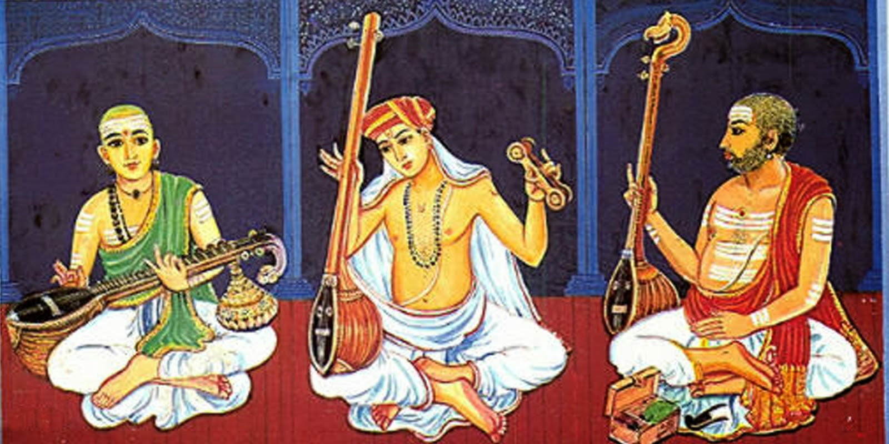

Carnatic Music: Carnatic music, also known as Karnatak music, is a classical music tradition that originated in the southern regions of India. Rooted in ancient scriptures and religious traditions, it has evolved over centuries.
Carnatic music's roots can be traced back to ancient texts such as the Natya Shastra, guiding principles of music, dance, and drama.
Flourishing under medieval patronage, Carnatic music saw the emergence of distinct styles and gharanas, with pivotal contributions from saint-composers.
Ragas and Talas: Carnatic music revolves around ragas (melodic modes) and talas (rhythmic cycles), providing a framework for improvisation.
Emphasis on Improvisation: Improvisation is a hallmark, with musicians exploring ragas through spontaneous ornamentations and nuances.
Vocal and Instrumental Forms: Practiced in vocal and instrumental forms, instruments like the violin, flute, veena, and mridangam play essential roles.
Raga Alapana: Concerts typically start with a slow exposition of a raga, known as "raga alapana," setting the mood.
Kriti and Kalpana Swara: Central to concerts are kritis, structured compositions, and kalpana swaras, improvised musical passages.
Ragam-Tanam-Pallavi (RTP): Advanced concerts may include Ragam-Tanam-Pallavi, exploring a raga, rhythmic patterns, and a challenging pallavi.
Trinity of Carnatic Music: Tyagaraja, Muthuswami Dikshitar, and Syama Sastri form the Trinity, with their compositions being cornerstones.
Contemporary Masters: Artists like M.S. Subbulakshmi, L. Subramaniam, and Balamuralikrishna have further enriched the tradition.
Carnatic music, with its historical roots, intricate structures, and global influence, stands as a testament to India's rich cultural heritage. Its timeless beauty continues to captivate audiences worldwide.